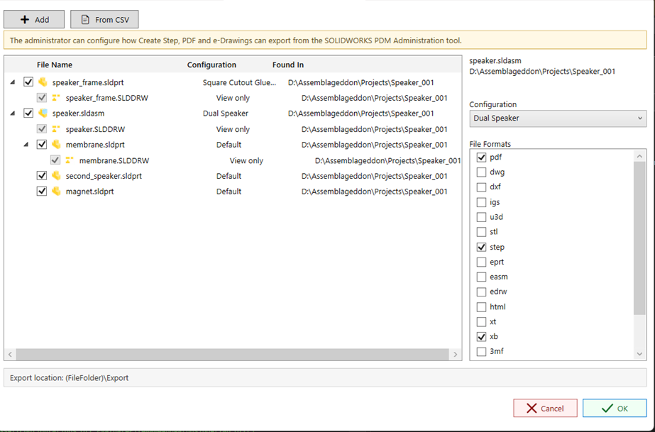

Scheduled Items Task Page
The Scheduled Items page lets administrators define the files PDMPublisher should process when the task launches.
This is useful for scheduled tasks and automated task launches where SOLIDWORKS PDM does not provide a file selection to the task.

Scheduling itself is handled by SOLIDWORKS PDM's own scheduling framework. The Scheduling page controls when the task starts. The Scheduled Items page controls which saved files PDMPublisher processes when that scheduled task starts.

When to use this page
Use Scheduled Items when the task is expected to run on a schedule or from an automation that does not pass selected files to PDMPublisher.
If files are configured on this page, PDMPublisher uses the Scheduled Items list as the task input.
Important
Scheduled Items override every other file selection. If this page contains files, PDMPublisher processes the files listed here and ignores files selected from the right-click Tasks menu, files selected on task launch, or files passed by another launch method. Only configure Scheduled Items for tasks that should always process the same saved list of files.
Adding files
Click Add to choose one or more SOLIDWORKS files from the vault.
PDMPublisher stores the selected file ID and parent folder ID. These IDs are used later to rebuild the task input list when the scheduled task runs.
The table displays:
| Column | Description |
|---|---|
| File Name | The selected file name. |
| Found In | The vault folder where the file was selected. |
Removing files
Select one or more rows and click Remove to remove them from the scheduled item list.
Important notes
- The selected files must remain available in the vault.
- The task host must have permission to access the selected files and their folders.
- The task still uses the settings from the other setup pages, including Options, Annotations, and Conditions.
- If this page contains files, those files are used even when the task is launched from a selected file in File Explorer.
- If this page contains files, those files are also used when the task starts from SOLIDWORKS PDM scheduling.
- If no files are selected at launch and no scheduled items are configured, the task will stop with an error.
Selecting files at task launch
Version 2026.06.21 adds an interactive file selection dialog for tasks configured to ask the user which files to process at launch.

The dialog lets the user:
- Add files from the vault.
- Import file names from a CSV file.
- Review automatically calculated assembly references.
- See related drawings as view-only child rows.
- Choose launch-specific file formats for the task run.
- Review the configured export location before starting the task.
The warning at the top reminds users that task export behavior is configured by an administrator in the SOLIDWORKS PDM Administration tool.
CSV import
Click From CSV to import files from a comma-separated file list.
PDMPublisher reads file names from a recognized file column such as filename, file, filepath, or path. If no recognized header is found, PDMPublisher scans each row for the first usable file name. Full paths are supported because only the file name is used for the vault search.
For each imported row, PDMPublisher searches the vault and uses the first matching result. Duplicate files already shown in the dialog are skipped.
Drawing rows
When a referenced part or assembly has an associated drawing, the drawing is shown under that item for review. Drawing rows marked View only are not passed to the task input list. They are checked only when a 2D output format such as pdf, dwg, or dxf is selected and the parent file is checked.